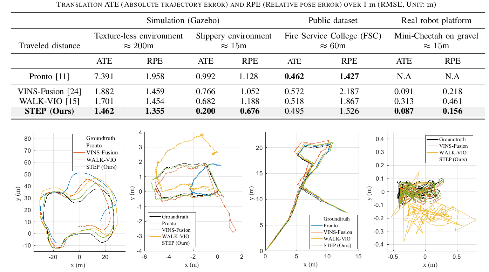

IEEE Robotics and Automation Letters, published online, 2022
Yeeun Kim (1) Byeongho Yu (1) Eungchang Mason Lee (1) Joon-Ha Kim (1) Hae-won Park (1) Hyun Myung (1)
(1) Korea Advanced Institute of Science and Technology

Abstract
We propose a novel state estimator for legged robots, STEP, achieved
through a novel preintegrated foot velocity factor. In the preintegrated
foot velocity factor, the usual non-slip assumption is not adopted.
Instead, the end effector velocity becomes observable by exploiting the
body speed obtained from a stereo camera. In other words, the preintegrated
end effector’s pose can be estimated. Another advantage of our approach
is that it eliminates the necessity for a contact detection step, unlike
the typical approaches. The proposed method has also been validated in
harsh-environment simulations and real-world experiments containing uneven or slippery terrains.
@ARTICLE{STEPKim2022,
author={Kim, Yeeun and Yu, Byeongho and Lee, Eungchang Mason and Kim, Joon-ha and Park, Hae-won and Myung, Hyun},
journal={IEEE Robotics and Automation Letters},
title={STEP: State Estimator for Legged Robots Using a Preintegrated Foot Velocity Factor},
year={2022},
volume={7},
number={2},
pages={4456-4463},
doi={10.1109/LRA.2022.3150844}
}